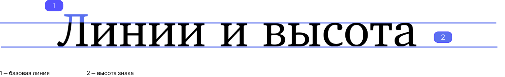
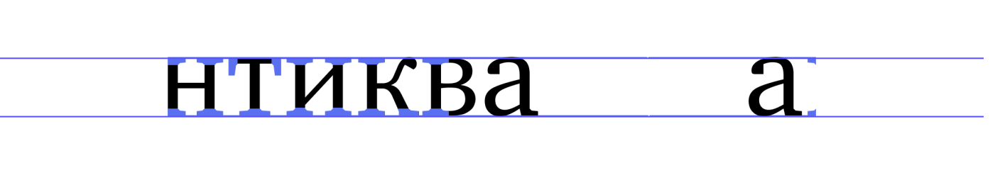

Понимание анатомии шрифта
лежит в основе работы с типографикой,
поэтому мы подготовили подробный
гайд, рассказывающий о букве
лежит в основе работы с типографикой,
поэтому мы подготовили подробный
гайд, рассказывающий о букве
«Всмотритесь в букву, и вы разглядите индивидуальность в её физических
свойствах: лёгкая или массивная, круглая
или квадратная, тонкая или приземистая»
свойствах: лёгкая или массивная, круглая
или квадратная, тонкая или приземистая»

Разбор анатомии
буквы начинается с рассмотрения того,
как текст позиционируется
в пространстве, то есть с его внешних
свойств.
 буквы начинается с рассмотрения того,
как текст позиционируется
в пространстве, то есть с его внешних
свойств.


Необходимо
также учитывать внутрибуквенный
просвет. Это внутренняя часть знака,
область, частично или полностью
находящееся между его линиями.
также учитывать внутрибуквенный
просвет. Это внутренняя часть знака,
область, частично или полностью
находящееся между его линиями.
Внутрибуквенный просвет бывает
открытым или закрытым. Степень
открытости может определяться
конструкцией знака или особенностями
гарнитуры.
открытым или закрытым. Степень
открытости может определяться
конструкцией знака или особенностями
гарнитуры.

Классификация шрифта и его
характер зависият от особенностей его
внутренних элементов. Рассмотрим
их подробнее.
характер зависият от особенностей его
внутренних элементов. Рассмотрим
их подробнее.
Овал
Замкнутая форма букв или их частей, которая образует окружность или эллипс
Полуовал
Форма внутри буквы, являющаяся часть окружности или овала
Хвостик
Окончание штриха, не увенчанное засечкой
Капля
Овальное завершение штриха буквы, по форме напоминающее каплю
Ухо
Особенный штрих в верхней части строчной латинской «g»
Узел
Область, в которой сходятся диагональные штрихи буквы
Петля
Замкнутый элемент, как правило, нижняя часть строчной буквы
У буквы есть основной штрих,
представляющий собой стержень или
два стержня, на которых стоит литера,
а также соединительный, который
проходит между ними.
представляющий собой стержень или
два стержня, на которых стоит литера,
а также соединительный, который
проходит между ними.

Апертура, характеристика
буквы, определяющаяся степенью
открытости ее знака, может
предопределить стиль и характер шрифта.
буквы, определяющаяся степенью
открытости ее знака, может
предопределить стиль и характер шрифта.
Новый гротеск
Одной из главных черт неогротеска является закрытая апертура
Гуманистический гротеск
Для таких гротесков напротив характерна открытая апертура
Анатомия буквы лежит в основе
ее структуры и формообразования,
поэтому каждый дизайнер должен
быть осведомлен о ней в полной мере.
ее структуры и формообразования,
поэтому каждый дизайнер должен
быть осведомлен о ней в полной мере.